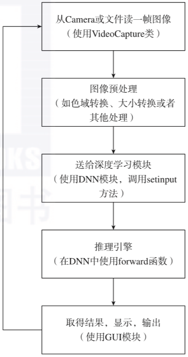

初识OpenCV.md
OpenCV是一个计算机视觉开源库，提供了处理图像和视频的能力。
查看OpenCV源码，在使用cmake编译后，打开编译目录下的sln，在整个解决方案搜索对应算子即可。
01 OpenCV库
OpenCV由各种不同组件组成。OpenCV源代码主要由OpenCV core（核心库）、opencv_contrib和opencv_extra等子仓库组成。近些年，OpenCV的主仓库增加了深度学习相关的子仓库：OpenVINO（即DLDT, Deep Learning Deployment Toolkit）、open_model_zoo，以及标注工具CVAT等。
下面分别介绍3个主要的代码库：OpenCV core、opencv_contrib、opencv_extra。
1. 核心库OpenCV core
核心库是OpenCV的主要算法来源。OpenCV采用模块化结构设计，包含了多个共享或者静态库。目前OpenCV核心库提供了很多组件，如下所示。
- 核心功能模块：这是一个小巧而高效的模块，定义了基础的数据结构，包含紧密多尺度向量矩阵和一些供其他模块使用的基础函数
- 图像处理模块：它包括了线性和非线性的图像滤波、几何图像变换（图像缩放、仿射变换、透视矫正、通用的基于表格的像素映射）、色域变换及直方图生成与分析等
- 视频：这是一个视频分析模块，包含运动检测、背景减除和对象追踪等算法
- calib3d：包含基础的多视角几何算法、单个和立体相机标定算法、对象姿势预测算法、立体一致性算法，以及3D元素重建
- Features2d：图像显著特征检测、特征点描述和匹配
- Objdetect：对象检测和预先定义的类别检测（如脸、眼、杯子、人、车等）
- Highgui：提供了比较容易使用的UI接口
- Video I/O：提供了基本的视频存取访问和编解码功能
- GPU：为不同的OpenCV算法模块提供GPU加速算法
- 其他：如FLANN和Google测试封装层、Python绑定等
2. opencv_contrib
opencv_contrib代码库主要用于管理新功能模块的开发。该库的设计主要基于以下考虑：处于初始开发阶段的功能模块，它的API定义会经常变化，各种测试也不够全面。
为了不影响OpenCV核心模块的稳定性，这些新功能模块会发布到opencv_contrib中。等到模块足够成熟并且在社区得到了足够的关注和使用之后，这个模块便会被移到OpenCV核心库，这意味着核心库开发团队将会对该模块进行全面的测试，保证这个模块具有产品级的质量。
例如，对于DNN这个模块，OpenCV 3.1开始出现在opencv_contrib中，到了3.3版本才移到了OpenCV核心库。
opencv_contrib需要和OpenCV核心库一同编译。下载好opencv_contrib的源代码并在CMake执行时传入参数：-DOPENCV_EXTRA_MODULES_PATH=<opencv_contrib源码路径>/modules。
如果编译时遇到问题，则可以在OpenCV核心库和opencv_contrib库的问题汇报页面,查看一下是否有现成的解决方案，如果没有，则读者可新建一个问题。OpenCV是一个活跃的社区，只要问题描述清晰、完整，一般会很快得到反馈。
3. opencv_extra
opencv_extra仓库存放了运行测试和示例程序时需要使用的一些测试数据和脚本。例如，运行DNN模块测试程序或者示例程序时需要用到预训练模型，这些模型可以通过opencv_extra中的脚本来自动下载。近些年添加的opencv/open_model_zoo仓库也增加了很多预训练好的深度学习模型，这些模型大多做过性能和速度上的调优。
02 OpenCV深度学习应用的典型流程
OpenCV是一个自包含库，可以不依赖于任何第三方库而运行，这个特性给开发调试带来了很大的便利。另外，OpenCV还提供了硬件加速功能，使得算法能够在各种平台高效地执行。
下面以一个识别性别和年龄的深度学习应用为例，展现OpenCV深度学习应用的典型流程。该应用使用C++语言，总共只需要百来行代码便可实现人脸检测、性别和年龄的识别功能，还可以方便地使用硬件的加速能力，提高程序的运行效率。此处展示核心流程，故以伪代码为例，完整的源代码由本书的参考代码库提供。
该应用的核心流程如下：首先读取两个网络模型参数（分别是性别和年龄），然后检测人脸，转换输入图像，最后运行网络前向预测。伪代码如下：
1 | // 引入OpenCV DNN模块的命名空间 |
应用识别效果如图1-1所示。
▲图1-1 应用识别效果图
以上伪代码很好地展示了OpenCV深度学习应用的典型流程，如图1-2所示。

▲图1-2 OpenCV深度学习应用的典型流程
03 OpenCV深度学习模块
深度学习模块是OpenCV为支持基于深度学习的计算机视觉应用所加入的新特性。OpenCV DNN模块于OpenCV 3.1版本开始出现在opencv_contrib库中，从3.3版本开始被纳入OpenCV核心库。
本节主要讲解OpenCV深度学习模块的实现原理和主要特性，通过这些内容，读者可以对OpenCV DNN有一个总体了解，并对OpenCV深度学习模块的应用代码有一个初步的印象。
作为计算机视觉领域的“标准库”，OpenCV为用户提供深度学习的支持是题中应有之义。OpenCV选择重新实现一个深度学习框架而不是直接调用现有的各种框架（如TensorFlow、Caffe等），有如下几点原因。
- 轻量：OpenCV的深度学习模块只实现了模型推理功能，这使得相关代码非常精简，加速了安装和编译过程。
- 最少的外部依赖：重新实现一遍深度学习框架使得对外部依赖减到最小，大大方便了深度学习应用的部署。
- 方便集成：①如果原来的应用是基于OpenCV开发的，通过深度学习模块可以非常方便地加入对神经网络推理的支持；②如果网络模型来自多个框架，如一个来自TensorFlow，一个来自Caffe，则深度学习模块可以方便整合网络运算结果。
- 通用性：①提供统一的接口来操作网络模型；②内部所做的优化和加速对所有网络模型格式都适用；③支持多种设备和操作系统。
1. 主要特性
OpenCV深度学习模块只提供网络推理功能，不支持网络训练。像所有的推理框架一样，加载和运行网络模型是基本的功能。深度学习模块支持TensorFlow、Caffe、Torch、DarkNet、ONNX和OpenVINO格式的网络模型，用户无须考虑原格式的差异。在加载过程中，各种格式的模型被转换成统一的内部网络结构。
深度学习模块支持所有的基本网络层类型和子结构，包括AbsVal、AveragePooling、BatchNormalization、Concatenation、Convolution (with DILATION)、Crop、DetectionOutput、Dropout、Eltwise、Flatten、FullConvolution、FullyConnected、LRN、LSTM、MaxPooling、MaxUnpooling、MVN、NormalizeBBox、Padding、Permute、Power、PReLU、PriorBox、Relu、RNN、Scale、Shift、Sigmoid、Slice、Softmax、Split和Tanh。
如果需要的层类型不在这个支持列表之内，则可以通过脚注中的申请链接来请求新的层类型的支持，OpenCV的开发者们有可能会在将来加入对该层类型的支持。读者也可以自己动手实现新的层类型，并把代码反馈回社区，参与到深度学习模块的开发中来。
除了实现基本的层类型，支持常见的网络架构也很重要，经过严格测试，深度学习模块支持的网络架构如下所示。
图像分类网络
- Caffe：AlexNet、GoogLeNet、VGG、ResNet、SqueezeNet、DenseNet、ShuffleNet
- TensorFlow：Inception、MobileNet
- Darknet：darknet-imagenet
- ONNX：AlexNet、GoogleNet、CaffeNet、RCNN_ILSVRC13、ZFNet512、VGG16、VGG16_bn、ResNet-18v1、ResNet-50v1、CNN Mnist、MobileNetv2、LResNet100E-IR、Emotion FERPlus、Squeezenet、DenseNet121、Inception-v1/v2、ShuffleNet
对象检测网络
Caffe：SSD、VGG、MobileNet-SSD、Faster-RCNN、R-FCN、OpenCV face detector
TensorFlow：SSD、Faster-RCNN、Mask-RCNN、EAST
Darknet：YOLOv2、Tiny YOLO、YOLOv3
ONNX：TinyYOLOv2
语义分割网络：FCN（Caffe）、ENet（Torch）、ResNet101_DUC_HDC（ONNX）
姿势估计网络：openpose（Caffe）
图像处理网络：Colorization（Caffe）、Fast-Neural-Style（Torch）
人脸识别网络：openface（Torch）
2. OpenCV DNN图像分类举例（Python）
C++和Python是OpenCV应用开发的主要语言，1.1.2节介绍了一个基于C++语言的深度学习应用，本节继续介绍一个基于Python的图像分类示例。
首先引入必要的Python库：
1 | import numpy as np # 引入numpy库 |
读入类别文件：
1 | with open('synset_words.txt') as f: |
读入待分类的图片：
1 | image=cv.imread('space_shuttle.jpg') |
调用深度学习模块的blobFromImage方法将图片对象转换成网络模型的输入张量（tensor）。该张量的大小是224×224，参数中的(104,117,123)表示需要从输入张量减掉的均值，它是从训练网络模型时用到的数据集计算出来的，这里直接使用即可。第二个参数“1”表示将OpenCV的默认通道顺序BGR转换成网络模型要求的RGB通道顺序。
1 | input=cv.dnn.blobFromImage(image, 1, (224, 224), (104, 117, 123)) |
下面来加载Caffe网络模型。注意，相关的模型参数和配置文件可在这里下载：
http://dl.caffe.berkeleyvision.org/bvlc_googlenet.caffemodel
https://github.com/opencv/opencv_extra/blob/4.1.0/testdata/dnn/bvlc_googlenet.prototxt
1 | net=cv.dnn.readNetFromCaffe('bvlc_googlenet.prototxt', |
设置网络模型输入：
1 | net.setInput(input) |
执行网络推理并得到输出结果：
1 | out=net.forward() |
从网络输出中获取最大的5个可能种类的索引值并输出类别名称和概率值：
1 | indexes=np.argsort(out[0])[-5:] |
通过这个例子，我们可以看到一个基于深度学习模型的分类应用并不复杂，主要分3部分：模型导入、网络执行和结果解析。